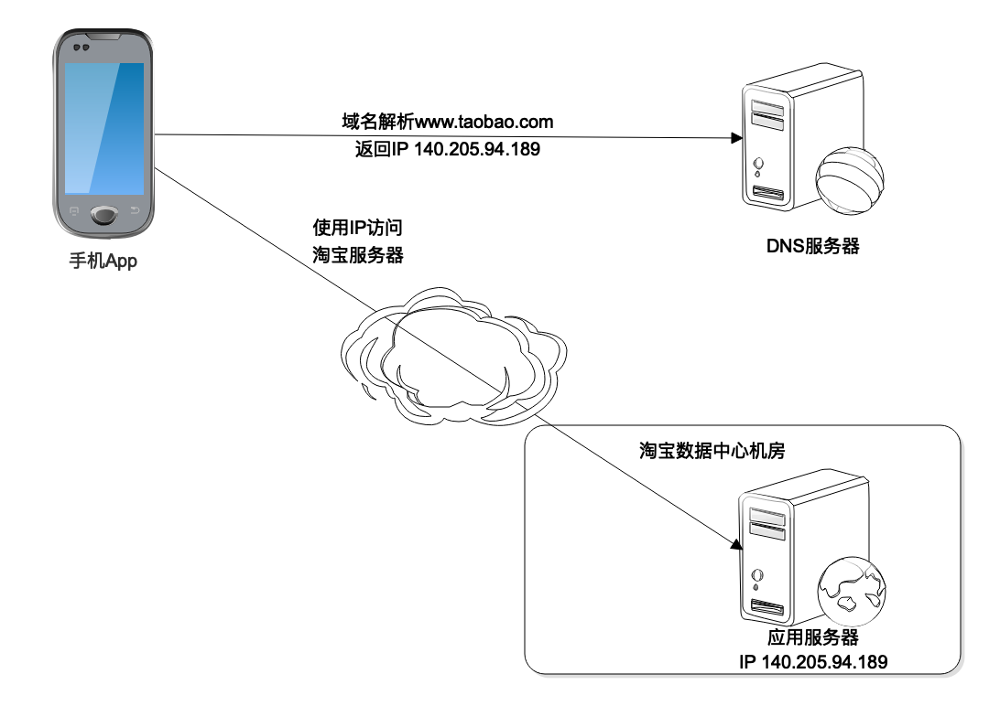
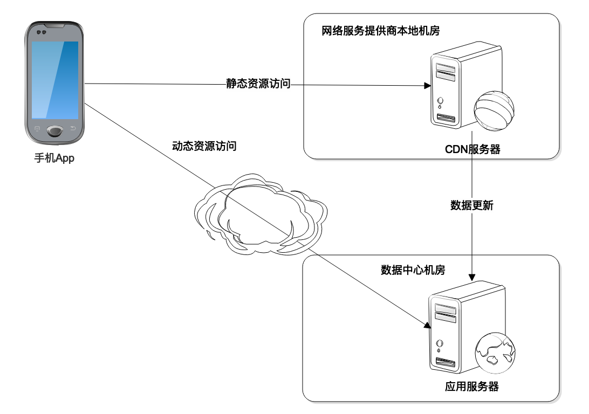
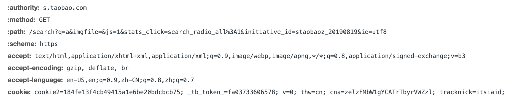
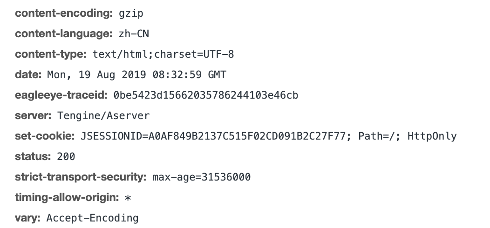
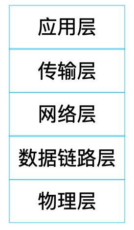
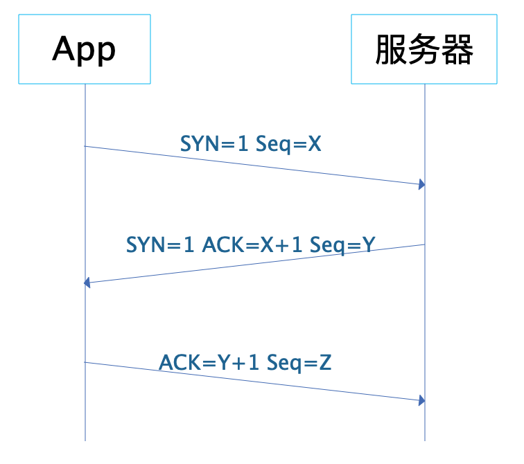
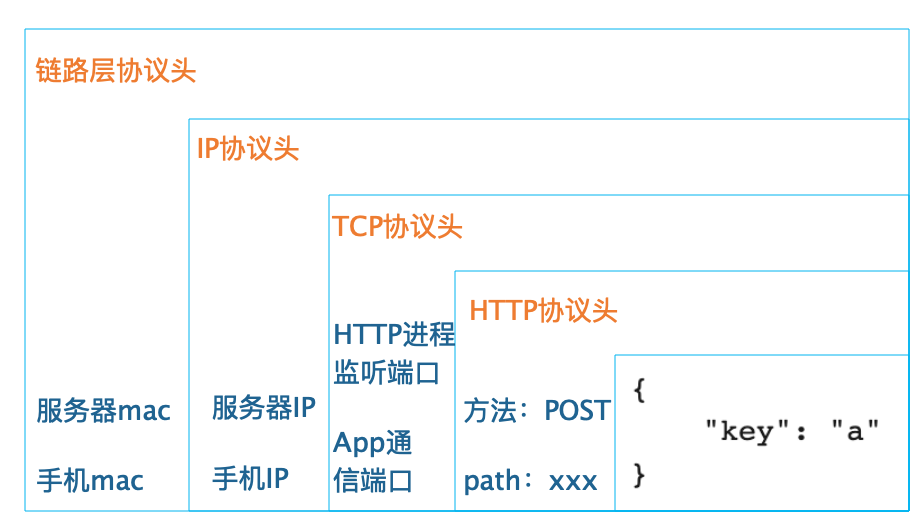
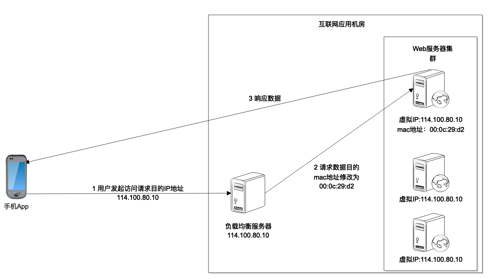

- 00 开篇词 掌握软件开发技术的第一性原理.md
- 01 程序运行原理：程序是如何运行又是如何崩溃的？.md
- 02 数据结构原理：Hash表的时间复杂度为什么是O(1)？.md
- 03 Java虚拟机原理：JVM为什么被称为机器（machine）？.md
- 04 网络编程原理：一个字符的互联网之旅.md
- 05 文件系统原理：如何用1分钟遍历一个100TB的文件？.md
- 06 数据库原理：为什么PrepareStatement性能更好更安全？.md
- 07 答疑 Java Web程序的运行时环境到底是怎样的？.md
- 07 编程语言原理：面向对象编程是编程的终极形态吗？.md
- 08 软件设计的方法论：软件为什么要建模？.md
- 09 软件设计实践：如何使用UML完成一个设计文档？.md
- 10 软件设计的目的：糟糕的程序员比优秀的程序员差在哪里？.md
- 11 软件设计的开闭原则：如何不修改代码却能实现需求变更？.md
- 12 软件设计的依赖倒置原则：如何不依赖代码却可以复用它的功能？.md
- 13 软件设计的里氏替换原则：正方形可以继承长方形吗？.md
- 14 软件设计的单一职责原则：为什么说一个类文件打开最好不要超过一屏？.md
- 15 软件设计的接口隔离原则：如何对类的调用者隐藏类的公有方法？.md
- 16 设计模式基础：不会灵活应用设计模式，你就没有掌握面向对象编程.md
- 17 设计模式应用：编程框架中的设计模式.md
- 18 反应式编程框架设计：如何使程序调用不阻塞等待，立即响应？.md
- 19 组件设计原则：组件的边界在哪里？.md
- 20 答疑 对于设计模式而言，场景到底有多重要？.md
- 20 领域驱动设计：35岁的程序员应该写什么样的代码？.md
- 21 分布式架构：如何应对高并发的用户请求.md
- 22 缓存架构：如何减少不必要的计算？.md
- 23 异步架构：如何避免互相依赖的系统间耦合？.md
- 24 负载均衡架构：如何用10行代码实现一个负载均衡服务？.md
- 25 数据存储架构：如何改善系统的数据存储能力？.md
- 26 搜索引擎架构：如何瞬间完成海量数据检索？.md
- 27 微服务架构：微服务究竟是灵丹还是毒药？.md
- 28 高性能架构：除了代码，你还可以在哪些地方优化性能？.md
- 29 高可用架构：我们为什么感觉不到淘宝应用升级时的停机？.md
- 30 安全性架构：为什么说用户密码泄漏是程序员的锅？.md
- 31 大数据架构：大数据技术架构的思想和原理是什么？.md
- 32 AI与物联网架构：从智能引擎到物联网平台.md
- 33 区块链技术架构：区块链到底能做什么？.md
- 33 答疑 互联网需要解决的技术问题是什么？.md
- 34 技术修炼之道：同样工作十几年，为什么有的人成为大厂架构师，有的人失业？.md
- 35 技术进阶之道：你和这个星球最顶级的程序员差几个等级？.md
- 36 技术落地之道：你真的知道自己要解决的问题是什么吗？.md
- 37 技术沟通之道：如何解决问题？.md
- 38 技术管理之道：你真的要转管理吗？.md
- 38 答疑 工作中的交往和沟通，都有哪些小技巧呢？.md
- 加餐 软件设计文档示例模板.md
- 结束语 期待未来的你，成为优秀的软件架构师.md
04 网络编程原理：一个字符的互联网之旅
我们开发的面向普通用户的应用程序，目前看来几乎都是互联网应用程序，也就是说，用户操作的应用程序，不管是浏览器还是移动App，核心请求都会通过互联网发送到后端的数据中心进行处理。这个数据中心可能是像微信这样的自己建设的、在多个地区部署的大规模机房，也可能是阿里云这样的云服务商提供的一个虚拟主机。
但是不管这个数据中心的大小，应用程序都需要在运行期和数据中心交互。比如我们在淘宝的搜索框随便输入一个字符“a”，就会在屏幕上看到一大堆商品。那么我们的手机是如何通过互联网完成这一操作的？这个字符如何穿越遥远的空间，从手机发送到淘宝的数据中心，在淘宝计算得到相关的结果，然后将结果再返回到我们的手机上，从而完成自己的互联网之旅呢？
虽然我们在编程的时候，很少要自己直接开发网络通信代码，服务器由Tomcat这样的WEB容器管理网络通信，服务间网络通信通过Dubbo这样的分布式服务框架完成网络通信。但是由于我们现在开发的应用主要是互联网应用，它们构建在网络通信基础上，网络通信的问题可能会出现在系统运行的任何时刻。了解网络通信原理，了解互联网应用如何跨越庞大的网络构建起来，对我们开发一个互联网应用系统很有帮助，对我们解决系统运行过程中各种因为网络通信而出现的各种问题更有帮助。
DNS
我们先从DNS说起。
构成互联网Internet的最基本的网络协议就是互联网协议Internet Protocol，简称IP协议。IP协议里面最重要的部分是IP地址，各种计算机设备之间能够互相通信，首先要能够找到彼此，IP地址就是互联网的地址标识。手机上的淘宝App能够访问淘宝的数据中心，就是知道了淘宝数据中心负责请求接入的服务器的IP地址，然后建立网络连接，进而处理请求数据。
那么手机上的淘宝App如何知道数据中心服务器的IP地址呢？当然淘宝的工程师可以在App里写死这个IP地址，但是这样做会带来很多问题，比如影响编程的灵活性以及程序的可用性等。
事实上这个IP地址是通过DNS域名解析服务器得到的。当我们打开淘宝App的时候，淘宝要把App首页加载进来，这时候就需要连接域名服务器进行域名解析，将xxx.taobao.com这样的域名解析为一个IP地址，然后连接目标服务器。

CDN
事实上DNS解析出来的IP地址，并不一定是淘宝数据中心的IP地址，也可能是淘宝CDN服务器的IP地址。
CDN是内容分发网络Content Delivery Network的缩写。我们能够用手机或者电脑上网，是因为运营服务商为我们提供了互联网接入服务，将我们的手机和电脑连接到互联网上。App请求的数据最先到达的是运营服务商的机房，然后运营商通过自己建设的骨干网络和交换节点，将我们请求数据的目的地址发往互联网的任何地方。
为了提高用户请求访问的速度，也为了降低数据中心的负载压力，淘宝会在全国各地各个主要的运营服务商的接入机房中部署一些缓存服务器，缓存那些静态的图片、资源文件等，这些缓存服务器构成了淘宝的CDN。
如果用户请求的数据数据是静态的资源，这些资源的URL通常以image.taobao.com之类的二级域名进行标识，域名解析的时候就会解析为淘宝CDN的IP地址，请求先被CDN处理，如果CDN中有需要的静态文件，就直接返回，如果没有，CDN会将请求发送到淘宝的数据中心，CDN从淘宝数据中心获得静态文件后，一方面缓存在自己的服务器上，一方面将数据返回给用户的App。
 而如果请求的数据是动态的，比如要搜索关键词为“a”的商品列表，请求的域名可能会是search.taobao.com这样的二级域名，就会直接被DNS解析为淘宝的数据中心的服务器IP地址，App请求发送到数据中心处理。
HTTP
不管发送到CDN还是数据中心，App请求都会以HTTP协议发送。
HTTP是一个应用层协议，当我们进行网络通信编程的时候，通常需要关注两方面的内容，一方面是应用层的通信协议，主要是我们通信的数据如何编码，既能使网络传输过去的数据携带必要的信息，又使通信的两方都能正确识别这些数据，即通信双方应用程序需要约定一个数据编码协议。另一方面就是网络底层通信协议，即如何为网络上需要通信的两个节点建立连接完成数据传输，目前互联网应用中最主要的就是TCP协议。
在TCP传输层协议层面，就是保证建立通信两方的稳定通信连接，将一方的数据以bit流的方式源源不断地发送到另一方，至于这些数据代表什么意思，哪里是两次请求的分界点，TCP协议统统不管，需要应用层面自己解决。如果我们基于TCP协议自己开发应用程序，就必须解决这些问题。而互联网应用需要在全球范围为用户提供服务，将全球的应用和全球的用户联系在一起，需要一个统一的应用层协议，这个协议就是HTTP协议。
 这张图是HTTP的请求头的例子，包括请求方法和请求头参数。请求方法主要有GET、POST，这是我们最常用的两种，此外还有DELETE、PUT、HEAD、TRACE等几种方法；请求头参数包括缓存控制Cache-Control、响应过期时间Expires、Cookie等等。
HTTP请求如果是GET方法，那么就只有请求头；如果是POST方法，在请求头之后还有一个body部分，包含请求提交的内容，HTTP会在请求头的Content-Length参数声明body的长度。
 这是HTTP响应头的例子，响应头和请求头一样包含各种参数，而status状态码声明响应状态，状态码是200，表示响应正常。
响应状态码是3XX，表示请求被重定向，常用的302，表示请求被临时重定向到新的URL，响应头中包含新的临时URL，客户端收到响应后，重新请求这个新的URL；状态码是4XX，表示客户端错误，常见的403，表示请求未授权，被禁止访问，404表示请求的页面不存在；状态码是5XX，表示服务器异常，常见的500请求未完成，502请求处理超时，503服务器过载。
如果响应正常，那么在响应头之后就是响应body，浏览器的响应body通常是一个HTML页面，App的响应body通常是个JSON字符串。
TCP
应用程序使用操作系统的socket接口进行网络编程，socket里封装了TCP协议。应用程序通过socket接口使用TCP协议完成网络编程，socket或者TCP在应用程序看就是一个底层通信协议，事实上，TCP仅仅是一个传输层协议，在传输层协议之下，还有网络层协议，网络层协议之下还有数据链路层协议，数据链路层协议之下还有物理层协议。
 传输层协议TCP和网络层协议IP共同构成TCP/IP协议栈，成为互联网应用开发最主要的通信协议。OSI开放系统互联模型将网络协议定义了7层，TCP/IP协议栈将OSI顶部三层协议应用层、表示层、会话层合并为一个应用层，HTTP协议就是TCP/IP协议栈中的应用层协议。
物理层负责数据的物理传输，计算机输入输出的只能是0 1这样的二进制数据，但是在真正的通信线路里有光纤、电缆、无线各种设备。光信号和电信号，以及无线电磁信号在物理上是完全不同的，如何让这些不同的设备能够理解、处理相同的二进制数据，这就是物理层要解决的问题。
数据链路层就是将数据进行封装后交给物理层进行传输，主要就是将数据封装成数据帧，以帧为单位通过物理层进行通信，有了帧，就可以在帧上进行数据校验，进行流量控制。数据链路层会定义帧的大小，这个大小也被称为最大传输单元。
像HTTP要在传输的数据上添加一个HTTP头一样，数据链路层也会将封装好的帧添加一个帧头，帧头里记录的一个重要信息就是发送者和接受者的mac地址。mac地址是网卡的设备标识符，是唯一的，数据帧通过这个信息确保数据送达到正确的目标机器。
前面已经提到，网络层IP协议使得互联网应用根据IP地址就能访问到淘宝的数据中心，请求离开App后，到达运营服务商的交换机，交换机会根据这个IP地址进行路由转发，可能中间会经过很多个转发节点，最后数据到达淘宝的服务器。
网络层的数据需要交给链路层进行处理，而链路层帧的大小定义了最大传输单元，网络层的IP数据包必须要小于最大传输单元才能进行网络传输，这个数据包也有一个IP头，主要包括的就是发送者和接受者的IP地址。
IP协议不是一个可靠的通信协议，并不会确保数据一定送达。要保证通信的稳定可靠，需要传输层协议TCP。TCP协议在传输正式数据前，会先建立连接，这就是著名的TCP三次握手。
 App和服务器之间发送三次报文才会建立一个TCP连接，报文中的SYN表示请求建立连接，ACK表示确认。App先发送 SYN=1，Seq=X的报文，表示请求建立连接，X是一个随机数；淘宝服务器收到这个报文后，应答SYN=1，ACK=X+1，Seq=Y的报文，表示同意建立连接；App收到这个报文后，检查ACK的值为自己发送的Seq值+1，确认建立连接，并发送ACK=Y+1的报文给服务器；服务器收到这个报文后检查ACK值为自己发送的Seq值+1，确认建立连接。至此，App和服务器建立起TCP连接，就可以进行数据传输了。
TCP也会在数据包上添加TCP头，TCP头除了包含一些用于校验数据正确性和控制数据流量的信息外，还包含通信端口信息，一台机器可能同时有很多进程在进行网络通信。如何使数据到达服务器后能发送给正确的进程去处理，就需要靠通信端口进行标识了。HTTP默认端口是80，当然我们可以在启动HTTP应用服务器进程的时候，随便定义一个数字作为HTTP应用服务器进程的监听端口，但是App在请求的时候，必须在URL中包含这个端口，才能在构建的TCP包中记录这个端口，也才能在到达服务器后，被正确的HTTP服务器进程处理。
如果我们以POST方法提交一个搜索请求给淘宝服务器，那么最终在数据链路层构建出来的数据帧大概是这个样子，这里假设IP数据包的大小没有超过链路层的最大传输单元。
 App要发送的数据只是key="a"这样一个JSON字符串，每一层协议都会在上一层协议基础上添加一个头部信息，最后封装成一个链路层的数据帧在网络上传输，发送给淘宝的服务器。淘宝的服务器在收到这个数据帧后，在通信协议的每一层进行校验检查，确保数据准确后，将头部信息删除，再交给自己的上一层协议处理。HTTP应用服务器在最上层，负责HTTP协议的处理，最后将key="a"这个JSON字符串交给淘宝工程师开发的应用程序处理。
LB（负载均衡）
HTTP请求到达淘宝数据中心的时候，事实上也并不是直接发送给搜索服务器处理。因为对于淘宝这样日活用户数亿的互联网应用而言，每时每刻都有大量的搜索请求到达数据中心，为了使这些海量的搜索请求都能得到及时处理，淘宝会部署一个由数千台服务器组成的搜索服务器集群，共同为这些高并发的请求提供服务。
因此，搜索请求到达数据中心的时候，首先到达的是搜索服务器集群的负载均衡服务器，也就是说，DNS解析出来的是负载均衡服务器的IP地址。然后，由负载均衡服务器将请求分发到搜索服务器集群中的某台服务器上。
负载均衡服务器的实现手段有很多种，淘宝这样规模的应用，通常使用Linux内核支持的链路层负载均衡。
 这种负载均衡模式也叫直接路由模式，在负载均衡服务器的Linux操作系统内核拿到数据包后，直接修改数据帧中的mac地址，将其修改为搜索服务器集群中某个服务器的mac地址，然后将数据重新发送回服务器集群所在的局域网，这个数据帧就会被某个真实的搜索服务器接收到。
负载均衡服务器和集群内的搜索服务器配置相同的虚拟IP地址，也就是说，在网络通信的IP层面，负载均衡服务器变更mac地址的操作是透明的，不影响TCP/IP的通信连接。所以真实的搜索服务器处理完搜索请求，发送应答响应的时候，就会直接发送回请求的App手机，不会再经过负载均衡服务器。
小结
事实上，这个搜索字符“a”的互联网之旅到这里还没有结束。淘宝搜索服务器程序在收到这个搜索请求的时候，首先在本地缓存中查找是否有对应的搜索结果。如果没有，会将这个搜索请求，也就是这个字符发送给一个分布式缓存集群查找是否有对应的搜索结果。如果还没有，才会将这个请求发送给一个更大规模的搜索引擎集群去查找。
这些分布式缓存集群或者搜索引擎集群都需要通过RPC远程过程调用的方式进行调用请求，也就是需要通过网络进行服务调用，这些网络服务也都是基于TCP协议进行编程的。
对于互联网应用，用户请求数据离开手机通过各种网络通信，最后到达数据中心的应用服务器进行最后的计算、处理，中间会经过许多环节，事实上，这些环节就构成了互联网系统的整体架构，所以通过网络通信，可以将整个互联网应用系统串起来，对理解互联网系统的技术架构很有帮助，在程序开发、运行过程中遇到各种网络相关问题，也可以快速分析问题原因，快速解决问题。
思考题
负载均衡就是将不同的网络请求数据分发到多台服务器上，每台服务器承担一部分请求负载压力，多台服务器共同承担外部并发请求的压力，除了文中提到的这种负载均衡实现方案，你还了解哪些方案呢？
欢迎你在评论区写下你的思考，也欢迎把这篇文章分享给你的朋友或者同事，一起交流一下。
© 2019 - 2023 Liangliang Lee. Powered by Vert.x and hexo-theme-book.